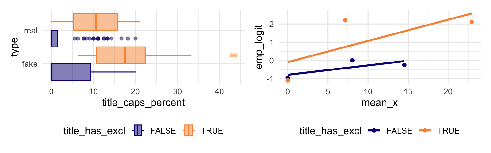

| term | estimate | std. error | z | p-value |
|---|---|---|---|---|
| Intercept | -2.232 | 0.672 | -3.32 | <0.001 |
| title_words | 0.120 | 0.058 | 2.07 | 0.038 |
| title_has_exclTRUE | 1.998 | 0.849 | 2.35 | 0.019 |
| title_caps_percent | 0.050 | 0.029 | 1.69 | 0.091 |
Day 21: Model comparison for logistic regression
Last time we learned how to do inference for one coefficient (Wald test and CI) and how to check conditions. Today we compare models:
- Do we need an interaction term?
- The likelihood ratio test (LRT): the logistic version of the extra sums of squares \(F\)-test
- AIC and BIC for logistic regression
The model from last time
Question: is the association between title_caps_percent and the odds of being fake news different for titles with and without an exclamation point? That is, do we need an interaction between title_has_excl and title_caps_percent?

The model with an interaction
\[\text{logit}(\pi_i) = \beta_0 + \beta_1\, \text{words}_i + \beta_2\, \text{excl}_i + \beta_3\, \text{caps}_i + \beta_4\, (\text{excl}_i \times \text{caps}_i)\]
| term | estimate | std. error | z | p-value |
|---|---|---|---|---|
| Intercept | -2.273 | 0.677 | -3.36 | <0.001 |
| title_words | 0.127 | 0.059 | 2.14 | 0.032 |
| title_has_exclTRUE | 1.281 | 1.386 | 0.92 | 0.355 |
| title_caps_percent | 0.041 | 0.033 | 1.28 | 0.202 |
| title_has_exclTRUE:title_caps_percent | 0.060 | 0.100 | 0.60 | 0.549 |
Q1. Write the fitted model on the log-odds scale for each group separately.
With an exclamation point (\(excl = 1\)):
Without an exclamation point (\(excl = 0\)):
Q2. Do we need an interaction term? Write out the null and alternative hypothesis.
Q3. Do we need title_has_excl at all? Write out the null and alternative hypothesis for this question.
The likelihood ratio test (LRT)
In linear regression we compared nested models with the ______________________________ \(F\)-test. For logistic regression we use a likelihood ratio test.
NoteDeviance
The deviance of a model is \(-2 \log L\), where \(L\) is the maximized likelihood. Like SSE in OLS, a smaller deviance means a ______________ fit. A bigger model always has a deviance that is the same or ______________.
NoteLikelihood Ratio Test
Hypotheses: \(H_0\): ______________________________ vs. \(H_a\): at least one of these \(\beta\)’s \(\ne 0\)
Test statistic: \(\Lambda = \text{Dev(reduced)} - \text{Dev(full)}\)
Reference distribution: \(\chi^2\) with \(df =\) ______________________________
p-value: the area ______________ \(\Lambda\) (upper tail)
In R, give the reduced model first:
anova(reduced_model, full_model, test = "LRT")| Resid DF | Resid Dev | Df | Deviance | Pr(>Chi) |
|---|---|---|---|---|
| \(n -\) (p+1 in reduced) | Dev(reduced) | |||
| \(n -\) (p+1 in full) | Dev(full) | # extra coefs | \(\Lambda\) | p-value |
Example 1: do we need the interaction?
Analysis of Deviance Table
Model 1: type_num ~ title_words + title_has_excl + title_caps_percent
Model 2: type_num ~ title_words + title_has_excl * title_caps_percent
Resid. Df Resid. Dev Df Deviance Pr(>Chi)
1 146 170.86
2 145 170.44 1 0.41625 0.5188Hypotheses:
Test statistic, df, and p-value:
Conclusion in context:
Example 2: the overall test
The summary() output gives the deviance of the model, and of an intercept-only model:
summary(news_mod)
Call:
glm(formula = type_num ~ title_words + title_has_excl + title_caps_percent,
family = "binomial", data = news)
Coefficients:
Estimate Std. Error z value Pr(>|z|)
(Intercept) -2.23184 0.67187 -3.322 0.000894 ***
title_words 0.12034 0.05808 2.072 0.038260 *
title_has_exclTRUE 1.99783 0.84918 2.353 0.018640 *
title_caps_percent 0.04982 0.02946 1.691 0.090783 .
---
Signif. codes: 0 '***' 0.001 '**' 0.01 '*' 0.05 '.' 0.1 ' ' 1
(Dispersion parameter for binomial family taken to be 1)
Null deviance: 201.90 on 149 degrees of freedom
Residual deviance: 170.86 on 146 degrees of freedom
AIC: 178.86
Number of Fisher Scoring iterations: 4Q4. Fill in the ANOVA table below for the test \(H_0: \beta_1 = \beta_2 = \beta_3 = 0\) against \(H_A\) at least 1 \(\ne 0\)
| Resid DF | Resid Dev | Df | Deviance | Pr(>Chi) | |
|---|---|---|---|---|---|
| 1 | |||||
| 2 |
1 - pchisq(lambda, df)Conclusion:
\(z\)-test vs. LRT
For one coefficient, \(H_0: \beta_i = 0\):
- In OLS, the \(t\)-test and \(F\)-test give exactly the same p-value.
- In logistic regression the \(z\)-test (Wald) and the LRT are ______________ equivalent. Hopefully they are close. If not, the ______________ is usually more accurate.
| term | z-test p-value | LRT p-value |
|---|---|---|
| title_words | 0.0383 | 0.0355 |
| title_has_excl | 0.0186 | 0.0075 |
| title_caps_percent | 0.0908 | 0.0869 |
The LRT can also test several coefficients at once, which the \(z\)-test cannot.
Example 3: is title_has_excl needed at all?
title_has_excl appears in two terms of news_mod2. To drop it entirely we have to remove both the main effect and the interaction.
\(H_0\): ______________________________
Analysis of Deviance Table
Model 1: type_num ~ title_words + title_caps_percent
Model 2: type_num ~ title_words + title_has_excl * title_caps_percent
Resid. Df Resid. Dev Df Deviance Pr(>Chi)
1 147 178.01
2 145 170.44 2 7.5695 0.02271 *
---
Signif. codes: 0 '***' 0.001 '**' 0.01 '*' 0.05 '.' 0.1 ' ' 1Q5. The individual \(z\)-tests for these two terms have large p-values. The joint LRT has a small p-value. Why? (Think back to the \(F\)-test in MLR.)
Conclusion in context:
AIC and BIC for logistic regression
\[AIC = -2\log(L) + 2k \qquad\qquad BIC = -2\log(L) + \log(n) \cdot k\]
where \(L\) is the maximized likelihood and \(k\) is the number of coefficients (including the intercept). For binary logistic regression, \(-2\log(L)\) is the ______________. Smaller is better, and both can compare nested or non-nested models.
| df | AIC | BIC | |
|---|---|---|---|
| reduced_model | 3 | 184.01 | 193.04 |
| news_mod | 4 | 178.86 | 190.90 |
| news_mod2 | 5 | 180.44 | 195.50 |
Q6. Which model do AIC and BIC prefer? Do they agree with the LRTs?
Summary
| To compare… | Use |
|---|---|
| one coefficient to 0 | |
| several coefficients to 0, nested models | |
| non-nested models, or many models |
- Deviance is \(-2\log L\). It plays the role of ______ in OLS.
- We use deviance to compare models
R function reference
| Function | Purpose |
|---|---|
anova(reduced, full, test = "LRT") |
Likelihood ratio test for nested models |
deviance(model) |
Deviance (\(-2\log L\)) of a model |
pchisq(x, df) |
\(\chi^2\) probability; use 1 - pchisq() for a p-value |
AIC(m1, m2, ...), BIC(m1, m2, ...) |
Information criteria for one or more models |